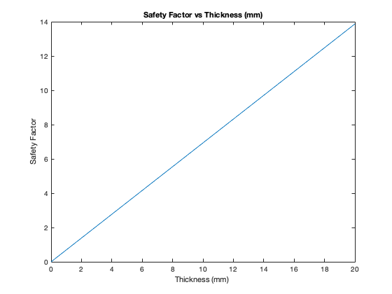

MAE 3270 HW 10 Q5 Dowling Problem 7.22 Part (b)
Using von Mises Theory (max octahedral shear stress theory) Prof Alan Zehnder Michelle Zhou Nov 3, 2021
P = 50*10^3; % load in N r_avg = 0.02525; % average radius in m T = 700; % torque in Nm sigma_oT = 303*10^6; % yield stress in tension in Pa t = [0:0.0001:0.02]; % thickness list in m A = 2*pi*r_avg*t; % area list in m^2 J = 2*pi*r_avg^3*t; % polar moment of inertia list in m^4 sigma_x = P./A; % normal stress list in the x-dir in Pa tau_xy = T*r_avg./J; % shear stress list xy in Pa sigma_VM = (1/sqrt(2))*sqrt(2*(sigma_x.^2) + 6*(tau_xy.^2)); % von Mises stress in Pa X = sigma_oT./sigma_VM; % dimensionless factor of safety % plotting safety factor vs thickness close all plot(t*10^3, X) xlabel('Thickness (mm) ') ylabel('Safety Factor') title('Safety Factor vs Thickness (mm)')
